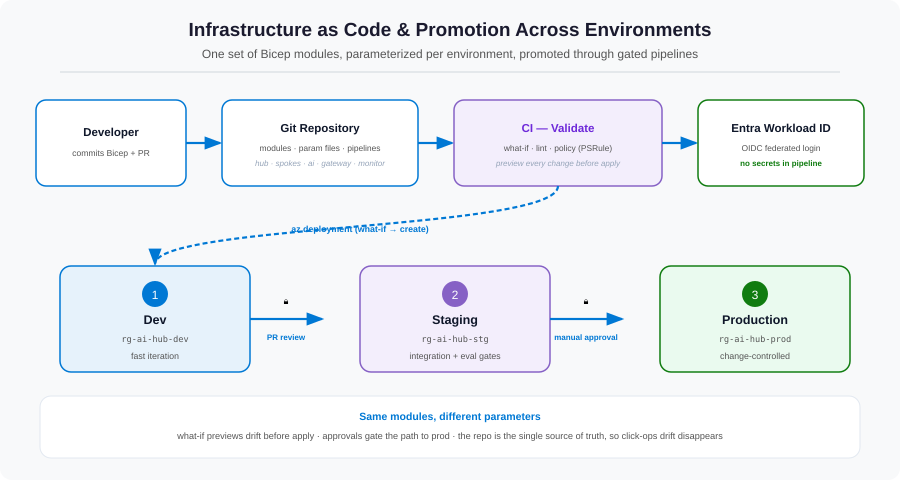

A brilliant architecture that exists only in one engineer's portal clicks is a liability, not a platform. This final part is about making the hub repeatable and runnable as a product: codified in Bicep, deployed through a gated pipeline, and governed by an operating model that decides who owns what. This is the difference between a clever design and a foundation teams actually adopt.
The problem: ClickOps doesn't scale — or survive
If the hub is built by hand in the portal, three things go wrong. You can't reproduce it in another region or for DR. You can't review a change before it lands in production. And you can't recover deterministically when something drifts. Worse than the technical risk is the human one: without a clear operating model, the platform team becomes a bottleneck approving every spoke request, and spoke teams route around them — recreating the very sprawl we set out to eliminate in Part 1.

Infrastructure as Code with modular Bicep
Everything in Parts 2–6 is expressed as Bicep modules — one per layer of the architecture, composed by a single orchestrating template. This mirrors the mental model of the series and lets each layer be owned and tested independently.
// main.bicep — composes the whole platform
targetScope = 'subscription'
module network 'modules/network.bicep' = { name: 'network', params: { ... } }
module aiServices 'modules/ai-services.bicep' = { name: 'ai', params: { ... }, dependsOn: [ network ] }
module gateway 'modules/gateway.bicep' = { name: 'gateway', params: { ... }, dependsOn: [ aiServices ] }
module identity 'modules/identity.bicep' = { name: 'identity', params: { ... }, dependsOn: [ aiServices ] }
module monitoring 'modules/monitoring.bicep' = { name: 'monitor', params: { ... } }The module list reads like the table of contents of this series — network, services, gateway, identity, monitoring.
Environments: dev → staging → prod
The same templates deploy to three isolated environments, each its own resource group with its own parameter file (smaller quotas in dev, production capacity in prod). Promotion means running identical code with different parameters, so "works in staging" is a real signal rather than a hopeful one.
CI/CD with GitHub Actions and OIDC
The pipeline is where governance becomes mechanical. A commit triggers validation; promotion to production requires human approval. Crucially, it authenticates to Azure with workload identity federation (OIDC) — there is no stored cloud credential in GitHub, which is the same keyless philosophy from Part 5 applied to the pipeline itself.
permissions:
id-token: write # request a short-lived OIDC token
contents: read
jobs:
deploy:
runs-on: ubuntu-latest
environment: production # gated by required reviewers
steps:
- uses: actions/checkout@v4
- uses: azure/login@v2
with: # federated login — no client secret
client-id: ${{ vars.AZURE_CLIENT_ID }}
tenant-id: ${{ vars.AZURE_TENANT_ID }}
subscription-id: ${{ vars.AZURE_SUBSCRIPTION_ID }}
- name: Preview changes (what-if)
run: az deployment sub what-if --location $LOC --template-file main.bicep
- name: Deploy
run: az deployment sub create --location $LOC --template-file main.bicepTwo gates do the heavy lifting. The what-if step prints exactly what will change before anything is touched, surfacing accidental deletions in a pull request. The environment approval on production means a human reviews and signs off before prod is modified.
The operating model: who owns what
Technology is only half the platform. The other half is a clear division of responsibility that gives spoke teams autonomy and keeps the platform governed. The dividing line is simple: the platform team owns the shared hub; spoke teams own their applications and their data.
| Concern | Platform team | Spoke team |
|---|---|---|
| Hub network, shared services, gateway | Owns & operates | — |
| Policies, guardrails, shared quota | Owns & sets | — |
| Application code & prompts | — | Owns |
| Their index, container & data | Provisions access | Owns content |
| Their token budget & cost | Provides visibility | Accountable |
The golden path: onboarding a new spoke
Because everything is codified, onboarding a team is a repeatable, low-friction routine rather than a bespoke project:
- Peer a new spoke VNet into the hub (Part 2 module, parameterized).
- Issue the spoke an APIM subscription — its identity for the gateway's per-spoke policies (Part 4).
- Create a user-assigned managed identity and assign narrowly-scoped roles to its own index, container, and secrets (Part 5).
- Hand over the gateway endpoint. The team starts building — against a private, governed, observable platform on day one.
Guardrails, not gates
Central control should be ambient, not a queue. Azure Policy enforces the non-negotiables automatically — deny public network access on AI resources, require private endpoints, mandate diagnostic settings to the shared workspace. Teams move fast within guardrails instead of waiting at gates, and compliance is continuous rather than audited after the fact.
The whole journey: every layer, every problem solved
Stepping back, here is the complete arc — each layer added a capability that retired a specific problem from the sprawl world:
| Part | Layer | Core problem it solved |
|---|---|---|
| 1 | The hub pattern | Sprawl, duplication, no governance surface |
| 2 | Network landing zone | Public internet exposure of AI services |
| 3 | Shared AI services | Inconsistent, duplicated, drifting services |
| 4 | AI gateway | No control point for quota, cost, resilience |
| 5 | Identity & security | Key sprawl, leakage, weak isolation |
| 6 | Observability & cost | Invisible usage, unaccountable spend |
| 7 | IaC, CI/CD & operating model | Not repeatable; unclear ownership |
From POC to a repeatable foundation
That is the whole point of the pattern. Most organizations don't have an AI idea problem — they have an AI scaling problem. The first project ships; the fifth one re-litigates networking, security, and cost from scratch. The centralized hub turns those one-off battles into a foundation that every new initiative inherits for free: private by default, keyless, governed, observable, and deployed from code. The platform team builds it once and curates it; spoke teams get a paved road to production. That's how you go from a portfolio of experiments to an enterprise AI capability.
References
- What is Bicep?
- Bicep deployment what-if
- Connect GitHub Actions to Azure with OIDC
- Azure Policy overview
- Baseline OpenAI end-to-end chat reference architecture
- Cloud Adoption Framework: landing zones
That's the series
Seven parts, from the problem to a production-grade, repeatable platform. If you're starting this journey, begin with Part 1 and the network landing zone — get the private foundation right and every later layer clicks into place. I'd love to hear how it maps to your environment; reach out on LinkedIn below.